Variance and Standard DeviationPhương sai và độ lệch chuẩn
Grade 12 · Topic: StatisticsLớp 12 · Chủ đề: Các số đặc trưng đo mức độ phân tán
1Lesson IntroductionGiới thiệu bài học
Learning goalsMục tiêu bài học
By the end of this lesson you can:
Sau bài học này, em có thể:
compute the variance of grouped data with the two formulas;
tính phương sai của mẫu số liệu ghép nhóm bằng hai công thức;
find the standard deviation and state its unit;
tìm độ lệch chuẩn và nêu đơn vị;
explain what a large or small standard deviation means;
giải thích ý nghĩa của độ lệch chuẩn lớn hay nhỏ;
compare the stability of two samples in real situations.
so sánh mức độ ổn định (đồng đều) của hai mẫu số liệu trong thực tế.
2Mathematical VocabularyTừ vựng Toán học
variance – the mean of the squared deviations from the mean: \(s^2=\dfrac1n\sum n_i(x_i-\bar x)^2\).
phương sai – trung bình cộng của bình phương các độ lệch so với số trung bình: \(s^2=\dfrac1n\sum n_i(x_i-\bar x)^2\).
standard deviation – the square root of the variance, \(s=\sqrt{s^2}\); it has the same unit as the data.
độ lệch chuẩn – căn bậc hai của phương sai, \(s=\sqrt{s^2}\); cùng đơn vị với số liệu.
deviation from the mean – the difference \(x_i-\bar x\).
độ lệch so với số trung bình – hiệu \(x_i-\bar x\).
midpoint (class mark) – the middle of a group, \(x_i=\dfrac{u_i+u_{i+1}}2\).
giá trị đại diện – giá trị chính giữa của nhóm, \(x_i=\dfrac{u_i+u_{i+1}}2\).
stable (consistent) – having a small spread around the mean.
ổn định (đồng đều) – ít phân tán quanh số trung bình.
3Useful English PhrasesCụm từ tiếng Anh thường gặp
Compute the variance of the grouped data.
Tính phương sai của mẫu số liệu ghép nhóm.
Find the standard deviation, rounded to the hundredths.
Tìm độ lệch chuẩn, làm tròn đến hàng phần trăm.
Which machine is more stable?
Máy nào hoạt động ổn định hơn?
The data are more spread out.
Số liệu phân tán hơn.
Use the midpoints of the groups.
Dùng giá trị đại diện của các nhóm.
4Prerequisite ReviewÔn tập kiến thức nền
From Lesson 9 and Grade 11: for grouped data with groups \([u_i;u_{i+1})\), the midpoint is \(x_i=\dfrac{u_i+u_{i+1}}2\) and the mean is \(\bar x=\dfrac{n_1x_1+\dots+n_kx_k}{n}\). The range and the interquartile range measure spread but use only a few values.
Từ Bài 9 và lớp 11: với mẫu ghép nhóm có các nhóm \([u_i;u_{i+1})\), giá trị đại diện là \(x_i=\dfrac{u_i+u_{i+1}}2\) và số trung bình \(\bar x=\dfrac{n_1x_1+\dots+n_kx_k}{n}\). Khoảng biến thiên và khoảng tứ phân vị đo độ phân tán nhưng chỉ dùng một vài giá trị.
5TheoryLý thuyết
5.1 Variance and standard deviation of grouped dataPhương sai và độ lệch chuẩn của mẫu số liệu ghép nhóm
DefinitionĐịnh nghĩa
A grouped sample has \(k\) groups with midpoints \(x_1,\dots,x_k\), frequencies \(n_1,\dots,n_k\), size \(n=n_1+\dots+n_k\) and mean \(\bar x\).
Mẫu số liệu ghép nhóm có \(k\) nhóm với giá trị đại diện \(x_1,\dots,x_k\), tần số \(n_1,\dots,n_k\), cỡ mẫu \(n=n_1+\dots+n_k\) và số trung bình \(\bar x\).
\(s^2\) is the variance, \(s=\sqrt{s^2}\) the standard deviation.
\(s^2\) là phương sai, \(s=\sqrt{s^2}\) là độ lệch chuẩn của mẫu số liệu ghép nhóm.
StepsCác bước tính
Write the midpoints \(x_i\) (add a row to the table).
Ghi giá trị đại diện \(x_i\) (thêm một hàng vào bảng).
Compute \(\bar x=\dfrac1n\sum n_ix_i\).
Tính \(\bar x=\dfrac1n\sum n_ix_i\).
Compute \(\dfrac1n\sum n_ix_i^2\), then subtract \(\bar x^2\). Take the square root for \(s\).
Tính \(\dfrac1n\sum n_ix_i^2\) rồi trừ \(\bar x^2\). Khai căn được \(s\).
5.2 MeaningÝ nghĩa
Interpreting \(s\)Ý nghĩa của \(s\)
\(s\) measures how far the data are from the mean on average. A larger \(s\) means more spread; a smaller \(s\) means the data are more concentrated (more stable, more consistent).
\(s\) đo mức độ các giá trị lệch khỏi số trung bình. \(s\) càng lớn thì số liệu càng phân tán; \(s\) càng nhỏ thì số liệu càng tập trung (ổn định, đồng đều hơn).
\(s\) has the unit of the data; \(s^2\) has the unit squared. Compare \(s\) of samples measured in the same unit.
\(s\) cùng đơn vị với số liệu; \(s^2\) có đơn vị là bình phương. So sánh \(s\) của các mẫu cùng đơn vị đo.
Adding a constant to all data does not change \(s\); multiplying all data by \(k\gt0\) multiplies \(s\) by \(k\).
Cộng cùng một số vào mọi giá trị thì \(s\) không đổi; nhân mọi giá trị với \(k\gt0\) thì \(s\) nhân với \(k\).
Watch out!Lưu ý
For grouped data the values inside a group are replaced by the midpoint, so \(s\) is only an estimate. Like the mean, \(s\) is affected by extreme values; then \(\Delta_Q\) may describe the spread better.
Với số liệu ghép nhóm, các giá trị trong nhóm được thay bằng giá trị đại diện nên \(s\) chỉ là giá trị xấp xỉ. Giống số trung bình, \(s\) bị ảnh hưởng bởi giá trị bất thường; khi đó \(\Delta_Q\) có thể mô tả độ phân tán tốt hơn.
6Worked ExamplesVí dụ có lời giải
ExampleVí dụ 1BasicCơ bản – Variance step by stepTính phương sai từng bước
| Score | \([60;\,70)\) | \([70;\,80)\) | \([80;\,90)\) | \([90;\,100)\) | Total |
|---|---|---|---|---|---|
| Midpoint \(x_i\) | \(65\) | \(75\) | \(85\) | \(95\) | |
| Students | \(5\) | \(8\) | \(5\) | \(2\) | \(n=20\) |
| Điểm | \([60;\,70)\) | \([70;\,80)\) | \([80;\,90)\) | \([90;\,100)\) | Cộng |
|---|---|---|---|---|---|
| Giá trị đại diện \(x_i\) | \(65\) | \(75\) | \(85\) | \(95\) | |
| Số học sinh | \(5\) | \(8\) | \(5\) | \(2\) | \(n=20\) |
Analysis: Use the midpoints 65, 75, 85, 95.
Phân tích: Dùng các giá trị đại diện 65, 75, 85, 95.
\(\bar x=\dfrac{5\cdot65+8\cdot75+5\cdot85+2\cdot95}{20}=\dfrac{1540}{20}=77\).
\(\bar x=\dfrac{5\cdot65+8\cdot75+5\cdot85+2\cdot95}{20}=\dfrac{1540}{20}=77\).
\(\dfrac1n\sum n_ix_i^2=\dfrac{5\cdot65^2+8\cdot75^2+5\cdot85^2+2\cdot95^2}{20}=\dfrac{120\,300}{20}=6015\).
\(\dfrac1n\sum n_ix_i^2=\dfrac{5\cdot65^2+8\cdot75^2+5\cdot85^2+2\cdot95^2}{20}=\dfrac{120\,300}{20}=6015\).
\(s^2=6015-77^2=6015-5929=86\); \(s=\sqrt{86}\approx9.27\).
\(s^2=6015-77^2=6015-5929=86\); \(s=\sqrt{86}\approx9{,}27\).
\(\bar x=77\), \(s^2=86\), \(s\approx9.27\) points.
\(\bar x=77\), \(s^2=86\), \(s\approx9{,}27\) điểm.
ExampleVí dụ 2BasicCơ bản – Units of \(s^2\) and \(s\)Đơn vị của \(s^2\) và \(s\)
The heights of a group of seedlings have variance \(s^2=6.25\ \text{cm}^2\). Find the standard deviation and its unit.
Chiều cao một nhóm cây giống có phương sai \(s^2=6{,}25\ \text{cm}^2\). Tìm độ lệch chuẩn và đơn vị.
Analysis: \(s=\sqrt{s^2}\).
Phân tích: \(s=\sqrt{s^2}\).
\(s=\sqrt{6.25}=2.5\).
\(s=\sqrt{6{,}25}=2{,}5\).
\(s=2.5\) cm (same unit as the heights).
\(s=2{,}5\) cm (cùng đơn vị với chiều cao).
ExampleVí dụ 3IntermediateTrung bình – Which group is more uniform?Nhóm nào đồng đều hơn?
| Time (min) | \([0;\,10)\) | \([10;\,20)\) | \([20;\,30)\) | \([30;\,40)\) | Total |
|---|---|---|---|---|---|
| Students | \(9\) | \(3\) | \(9\) | \(9\) | \(n=30\) |
| Time (min) | \([0;\,10)\) | \([10;\,20)\) | \([20;\,30)\) | \([30;\,40)\) | \([40;\,50)\) | Total |
|---|---|---|---|---|---|---|
| Students | \(8\) | \(3\) | \(11\) | \(9\) | \(9\) | \(n=40\) |
| Thời gian (phút) | \([0;\,10)\) | \([10;\,20)\) | \([20;\,30)\) | \([30;\,40)\) | Cộng |
|---|---|---|---|---|---|
| Số học sinh | \(9\) | \(3\) | \(9\) | \(9\) | \(n=30\) |
| Thời gian (phút) | \([0;\,10)\) | \([10;\,20)\) | \([20;\,30)\) | \([30;\,40)\) | \([40;\,50)\) | Cộng |
|---|---|---|---|---|---|---|
| Số học sinh | \(8\) | \(3\) | \(11\) | \(9\) | \(9\) | \(n=40\) |
Analysis: Compute \(s\) for each group and compare.
Phân tích: Tính \(s\) của mỗi nhóm rồi so sánh.
A: \(\bar x_A=21\), \(s_A^2=585-21^2=144\), \(s_A=12\).
A: \(\bar x_A=21\), \(s_A^2=585-21^2=144\), \(s_A=12\).
B: \(\bar x_B=27\), \(s_B^2=925-27^2=196\), \(s_B=14\).
B: \(\bar x_B=27\), \(s_B^2=925-27^2=196\), \(s_B=14\).
\(s_A=12\lt s_B=14\): group A is more uniform (group B studies longer on average).
\(s_A=12\lt s_B=14\): nhóm A đồng đều hơn (nhóm B học lâu hơn tính trung bình).
ExampleVí dụ 4IntermediateTrung bình – From sumsTính từ các tổng
A sample of \(n=40\) grouped values has \(\sum n_ix_i=2600\) and \(\sum n_ix_i^2=172\,000\). Find \(\bar x\), \(s^2\) and \(s\).
Một mẫu ghép nhóm cỡ \(n=40\) có \(\sum n_ix_i=2600\) và \(\sum n_ix_i^2=172\,000\). Tìm \(\bar x\), \(s^2\) và \(s\).
Analysis: Use the short formula \(s^2=\dfrac1n\sum n_ix_i^2-\bar x^2\).
Phân tích: Dùng công thức \(s^2=\dfrac1n\sum n_ix_i^2-\bar x^2\).
\(\bar x=\dfrac{2600}{40}=65\).
\(\bar x=\dfrac{2600}{40}=65\).
\(s^2=\dfrac{172\,000}{40}-65^2=4300-4225=75\).
\(s^2=\dfrac{172\,000}{40}-65^2=4300-4225=75\).
\(\bar x=65\), \(s^2=75\), \(s=\sqrt{75}\approx8.66\).
\(\bar x=65\), \(s^2=75\), \(s=\sqrt{75}\approx8{,}66\).
ExampleVí dụ 5AdvancedNâng cao – Changing the unitĐổi đơn vị đo
Noon temperatures in a month have \(\bar x=30^\circ\text{C}\) and \(s=2.5^\circ\text{C}\). Convert to Fahrenheit by \(F=1.8C+32\). Find the new mean and standard deviation. Is the weather "more variable" in °F?
Nhiệt độ buổi trưa trong một tháng có \(\bar x=30^\circ\text{C}\), \(s=2{,}5^\circ\text{C}\). Đổi sang độ F theo \(F=1{,}8C+32\). Tìm số trung bình và độ lệch chuẩn mới. Thời tiết có "biến động hơn" khi đo bằng °F không?
Analysis: Multiplying by 1.8 multiplies \(s\) by 1.8; adding 32 changes the mean only.
Phân tích: Nhân với 1,8 làm \(s\) nhân 1,8; cộng 32 chỉ làm thay đổi số trung bình.
\(\bar x_F=1.8\cdot30+32=86\ ^\circ\text{F}\).
\(\bar x_F=1{,}8\cdot30+32=86\ ^\circ\text{F}\).
\(s_F=1.8\cdot2.5=4.5\ ^\circ\text{F}\).
\(s_F=1{,}8\cdot2{,}5=4{,}5\ ^\circ\text{F}\).
\(86^\circ\text{F}\) and \(4.5^\circ\text{F}\). No: the spread is the same, only the unit changed – compare \(s\) only in the same unit.
\(86^\circ\text{F}\) và \(4{,}5^\circ\text{F}\). Không: mức biến động như cũ, chỉ đổi đơn vị – chỉ so sánh \(s\) khi cùng đơn vị.
7PracticeBài tập luyện tập
A. Multiple ChoiceA. Trắc nghiệm nhiều lựa chọn
| Income | \([6;\,8)\) | \([8;\,10)\) | \([10;\,12)\) | \([12;\,14)\) | Total |
|---|---|---|---|---|---|
| Workers | \(7\) | \(12\) | \(15\) | \(6\) | \(n=40\) |
| Thu nhập (triệu đồng) | \([6;\,8)\) | \([8;\,10)\) | \([10;\,12)\) | \([12;\,14)\) | Cộng |
|---|---|---|---|---|---|
| Số công nhân | \(7\) | \(12\) | \(15\) | \(6\) | \(n=40\) |
Answer: b. Midpoints \(7;\ 9;\ 11;\ 13\); \(\bar x=10\); \(s^2=\dfrac1n\sum n_ix_i^2-\bar x^2=103.6-10^2=3.6\).
Đáp án b. Giá trị đại diện \(7;\ 9;\ 11;\ 13\); \(\bar x=10\); \(s^2=\dfrac1n\sum n_ix_i^2-\bar x^2=103{,}6-10^2=3{,}6\).
For the masses (kg) of pigs on a farm, a grouped sample of size \(n=25\) gives \(\sum n_ix_i=1750\) and \(\sum n_ix_i^2=123725\). The standard deviation is…
Với khối lượng (kg) của đàn lợn ở một trang trại, mẫu ghép nhóm cỡ \(n=25\) có \(\sum n_ix_i=1750\) và \(\sum n_ix_i^2=123725\). Độ lệch chuẩn của mẫu là…
Answer: a. \(\bar x=70\), \(s^2=\dfrac{123725}{25}-70^2=49\), \(s=7\).
Đáp án a. \(\bar x=70\), \(s^2=\dfrac{123725}{25}-70^2=49\), \(s=7\).
The variance of the heights of seedlings is \(s^2=12.25\) cm². The standard deviation is…
Phương sai của chiều cao cây giống là \(s^2=12{,}25\) cm². Độ lệch chuẩn là…
Answer: d. \(s=\sqrt{12.25}=3.5\); \(s\) has the same unit as the data (cm).
Đáp án d. \(s=\sqrt{12{,}25}=3{,}5\); \(s\) có cùng đơn vị với số liệu (cm).
Two machines fill bottles of water (ml). A: mean \(499.1\), \(s=3.7\). B: mean \(499.6\), \(s=3\). Which conclusion is right?
Hai máy chiết rót nước vào chai (ml). A: trung bình \(499{,}1\), \(s=3{,}7\). B: trung bình \(499{,}6\), \(s=3\). Kết luận nào đúng?
Answer: a. The smaller standard deviation means less spread: \(3\lt3.7\).
Đáp án a. Độ lệch chuẩn nhỏ hơn thì ít phân tán hơn: \(3\lt3{,}7\).
For grouped data with midpoints \(x_i\) and frequencies \(n_i\), the variance is…
Với mẫu ghép nhóm có giá trị đại diện \(x_i\), tần số \(n_i\), phương sai là…
Answer: b. \(s^2\) is the mean of the squared deviations.
Đáp án b. \(s^2\) là trung bình của bình phương các độ lệch.
| Mass (g) | \([50;\,55)\) | \([55;\,60)\) | \([60;\,65)\) | Total |
|---|---|---|---|---|
| Eggs | \(10\) | \(0\) | \(10\) | \(n=20\) |
| Khối lượng (g) | \([50;\,55)\) | \([55;\,60)\) | \([60;\,65)\) | Cộng |
|---|---|---|---|---|
| Số quả trứng | \(10\) | \(0\) | \(10\) | \(n=20\) |
Answer: a. \(\bar x\) is halfway between the two midpoints, every value is \(5\) away from \(\bar x\), so \(s=5\).
Đáp án a. \(\bar x\) nằm chính giữa hai giá trị đại diện, mọi giá trị cách \(\bar x\) đúng \(5\) nên \(s=5\).
B. True or FalseB. Đúng hoặc sai
| Time (min) | \([10;\,15)\) | \([15;\,20)\) | \([20;\,25)\) | \([25;\,30)\) | Total |
|---|---|---|---|---|---|
| Students | \(12\) | \(8\) | \(8\) | \(22\) | \(n=50\) |
| Thời gian (phút) | \([10;\,15)\) | \([15;\,20)\) | \([20;\,25)\) | \([25;\,30)\) | Cộng |
|---|---|---|---|---|---|
| Số học sinh | \(12\) | \(8\) | \(8\) | \(22\) | \(n=50\) |
Midpoints \(12.5;\ 17.5;\ 22.5;\ 27.5\); \(\bar x=21.5\); \(s^2=\dfrac1n\sum n_ix_i^2-\bar x^2=500.25-21.5^2=38\).
Giá trị đại diện \(12{,}5;\ 17{,}5;\ 22{,}5;\ 27{,}5\); \(\bar x=21{,}5\); \(s^2=\dfrac1n\sum n_ix_i^2-\bar x^2=500{,}25-21{,}5^2=38\).
If every value of a sample increases by 5, the standard deviation does not change.
Nếu cộng thêm 5 vào mọi giá trị của mẫu thì độ lệch chuẩn không đổi.
Adding \(c\): \(s\) unchanged. Multiplying by \(k\gt0\): \(s\) times \(k\), \(s^2\) times \(k^2\). \(s\) has the data unit.
Cộng \(c\): \(s\) không đổi. Nhân \(k\gt0\): \(s\) nhân \(k\), \(s^2\) nhân \(k^2\). \(s\) có cùng đơn vị với số liệu.
All salaries in a company are increased by 10%. Then the variance of the salaries increases by 10%.
Mọi tiền lương trong một công ty đều tăng 10%. Khi đó phương sai của tiền lương tăng 10%.
Multiplying by \(1.1\): \(s\) is multiplied by \(1.1\) (+10%), \(s^2\) by \(1.21\) (+21%).
Nhân với \(1{,}1\): \(s\) nhân \(1{,}1\) (tăng 10%), \(s^2\) nhân \(1{,}21\) (tăng 21%).
C. Short AnswerC. Trả lời ngắn
A grouped sample has mean \(\bar x=30\) and standard deviation \(s=6\). Find \(\dfrac1n\sum n_ix_i^2\).
Mẫu ghép nhóm có số trung bình \(\bar x=30\) và độ lệch chuẩn \(s=6\). Tính \(\dfrac1n\sum n_ix_i^2\).
Enter a number.
Nhập một số.
\(s^2=\dfrac1n\sum n_ix_i^2-\bar x^2\Rightarrow\dfrac1n\sum n_ix_i^2=36+900=936\).
\(s^2=\dfrac1n\sum n_ix_i^2-\bar x^2\Rightarrow\dfrac1n\sum n_ix_i^2=36+900=936\).
The heights of the students in a class were measured and grouped as follows. The histogram shows the grouped data. Find the standard deviation of the height (round to the hundredths).
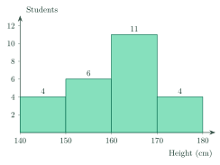
Đo chiều cao của các học sinh một lớp rồi ghép nhóm số liệu như sau. Biểu đồ tần số biểu diễn mẫu số liệu ghép nhóm. Tìm độ lệch chuẩn của chiều cao (làm tròn đến hàng phần trăm).
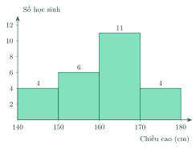
Enter a decimal number, e.g. 3.25.
Nhập số thập phân, ví dụ 3,25.
Midpoints \(145;\ 155;\ 165;\ 175\); \(\bar x=161\); \(s^2=\dfrac1n\sum n_ix_i^2-\bar x^2=26009-161^2=88\). \(s=\sqrt{88}\approx9.38\).
Giá trị đại diện \(145;\ 155;\ 165;\ 175\); \(\bar x=161\); \(s^2=\dfrac1n\sum n_ix_i^2-\bar x^2=26009-161^2=88\). \(s=\sqrt{88}\approx9{,}38\).
Noon temperatures in a month have standard deviation \(s=2.5\ ^\circ\text{C}\). They are converted to Fahrenheit by \(F=1.8C+32\). Find the new standard deviation (in \(^\circ\text{F}\)).
Nhiệt độ buổi trưa trong một tháng có độ lệch chuẩn \(s=2{,}5\ ^\circ\text{C}\). Đổi sang độ F theo công thức \(F=1{,}8C+32\). Tính độ lệch chuẩn mới (đơn vị \(^\circ\text{F}\)).
Enter a decimal number, e.g. 3.25.
Nhập số thập phân, ví dụ 3,25.
\(s_F=1.8\cdot2.5=4.5\) (adding 32 does not change \(s\)).
\(s_F=1{,}8\cdot2{,}5=4{,}5\) (cộng 32 không làm đổi \(s\)).
A. Multiple ChoiceA. Trắc nghiệm nhiều lựa chọn
| Age | \([25;\,30)\) | \([30;\,35)\) | \([35;\,40)\) | \([40;\,45)\) | Total |
|---|---|---|---|---|---|
| Employees | \(9\) | \(7\) | \(4\) | \(5\) | \(n=25\) |
| Tuổi | \([25;\,30)\) | \([30;\,35)\) | \([35;\,40)\) | \([40;\,45)\) | Cộng |
|---|---|---|---|---|---|
| Số nhân viên | \(9\) | \(7\) | \(4\) | \(5\) | \(n=25\) |
Answer: b. Midpoints \(27.5;\ 32.5;\ 37.5;\ 42.5\); \(\bar x=33.5\); \(s^2=\dfrac1n\sum n_ix_i^2-\bar x^2=1154.25-33.5^2=32\).
Đáp án b. Giá trị đại diện \(27{,}5;\ 32{,}5;\ 37{,}5;\ 42{,}5\); \(\bar x=33{,}5\); \(s^2=\dfrac1n\sum n_ix_i^2-\bar x^2=1154{,}25-33{,}5^2=32\).
For the daily sales (million VND) of a shop, a grouped sample of size \(n=20\) gives \(\sum n_ix_i=860\) and \(\sum n_ix_i^2=37060\). The standard deviation is…
Với doanh thu mỗi ngày (triệu đồng) của một cửa hàng, mẫu ghép nhóm cỡ \(n=20\) có \(\sum n_ix_i=860\) và \(\sum n_ix_i^2=37060\). Độ lệch chuẩn của mẫu là…
Answer: a. \(\bar x=43\), \(s^2=\dfrac{37060}{20}-43^2=4\), \(s=2\).
Đáp án a. \(\bar x=43\), \(s^2=\dfrac{37060}{20}-43^2=4\), \(s=2\).
The variance of the masses of fish is \(s^2=12.25\) kg². The standard deviation is…
Phương sai của khối lượng cá là \(s^2=12{,}25\) kg². Độ lệch chuẩn là…
Answer: d. \(s=\sqrt{12.25}=3.5\); \(s\) has the same unit as the data (kg).
Đáp án d. \(s=\sqrt{12{,}25}=3{,}5\); \(s\) có cùng đơn vị với số liệu (kg).
Two rice varieties were planted on several fields; yields are in quintals per hectare. A: mean \(59.8\), \(s=2.5\). B: mean \(59.4\), \(s=3.8\). Which conclusion is right?
Hai giống lúa được trồng trên nhiều thửa ruộng; năng suất tính theo tạ/ha. A: trung bình \(59{,}8\), \(s=2{,}5\). B: trung bình \(59{,}4\), \(s=3{,}8\). Kết luận nào đúng?
Answer: c. The smaller standard deviation means less spread: \(2.5\lt3.8\).
Đáp án c. Độ lệch chuẩn nhỏ hơn thì ít phân tán hơn: \(2{,}5\lt3{,}8\).
Which formula gives the standard deviation \(s\) of grouped data?
Công thức nào cho độ lệch chuẩn \(s\) của mẫu ghép nhóm?
Answer: a. \(s=\sqrt{s^2}\).
Đáp án a. \(s=\sqrt{s^2}\).
| Waiting (min) | \([10;\,15)\) | \([15;\,20)\) | Total |
|---|---|---|---|
| Customers | \(8\) | \(8\) | \(n=16\) |
| Thời gian chờ (phút) | \([10;\,15)\) | \([15;\,20)\) | Cộng |
|---|---|---|---|
| Số khách hàng | \(8\) | \(8\) | \(n=16\) |
Answer: b. \(\bar x\) is halfway between the two midpoints, every value is \(2.5\) away from \(\bar x\), so \(s=2.5\).
Đáp án b. \(\bar x\) nằm chính giữa hai giá trị đại diện, mọi giá trị cách \(\bar x\) đúng \(2{,}5\) nên \(s=2{,}5\).
B. True or FalseB. Đúng hoặc sai
| Time (min) | \([5;\,10)\) | \([10;\,15)\) | \([15;\,20)\) | \([20;\,25)\) | Total |
|---|---|---|---|---|---|
| Students | \(8\) | \(4\) | \(4\) | \(4\) | \(n=20\) |
| Thời gian (phút) | \([5;\,10)\) | \([10;\,15)\) | \([15;\,20)\) | \([20;\,25)\) | Cộng |
|---|---|---|---|---|---|
| Số học sinh | \(8\) | \(4\) | \(4\) | \(4\) | \(n=20\) |
Midpoints \(7.5;\ 12.5;\ 17.5;\ 22.5\); \(\bar x=13.5\); \(s^2=\dfrac1n\sum n_ix_i^2-\bar x^2=216.25-13.5^2=34\).
Giá trị đại diện \(7{,}5;\ 12{,}5;\ 17{,}5;\ 22{,}5\); \(\bar x=13{,}5\); \(s^2=\dfrac1n\sum n_ix_i^2-\bar x^2=216{,}25-13{,}5^2=34\).
If every value of a sample is doubled, the variance is doubled.
Nếu nhân đôi mọi giá trị của mẫu thì phương sai cũng tăng gấp đôi.
Adding \(c\): \(s\) unchanged. Multiplying by \(k\gt0\): \(s\) times \(k\), \(s^2\) times \(k^2\). \(s\) has the data unit.
Cộng \(c\): \(s\) không đổi. Nhân \(k\gt0\): \(s\) nhân \(k\), \(s^2\) nhân \(k^2\). \(s\) có cùng đơn vị với số liệu.
All prices of products in a company are increased by 20%. Then the variance of the prices of products increases by 20%.
Mọi giá sản phẩm trong một công ty đều tăng 20%. Khi đó phương sai của giá sản phẩm tăng 20%.
Multiplying by \(1.2\): \(s\) is multiplied by \(1.2\) (+20%), \(s^2\) by \(1.44\) (+44%).
Nhân với \(1{,}2\): \(s\) nhân \(1{,}2\) (tăng 20%), \(s^2\) nhân \(1{,}44\) (tăng 44%).
C. Short AnswerC. Trả lời ngắn
Given \(\bar x=21\) and \(s=5\), calculate the mean of the squares \(\dfrac1n\sum n_ix_i^2\).
Biết \(\bar x=21\), \(s=5\), tính trung bình bình phương \(\dfrac1n\sum n_ix_i^2\).
Enter a number.
Nhập một số.
\(s^2=\dfrac1n\sum n_ix_i^2-\bar x^2\Rightarrow\dfrac1n\sum n_ix_i^2=25+441=466\).
\(s^2=\dfrac1n\sum n_ix_i^2-\bar x^2\Rightarrow\dfrac1n\sum n_ix_i^2=25+441=466\).
A farm weighed a sample of eggs before packing them. Based on the histogram, calculate \(s\) for the mass (round to the hundredths).
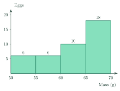
Một trang trại cân mẫu các quả trứng trước khi đóng gói. Dựa vào biểu đồ tần số, tính \(s\) của khối lượng (làm tròn đến hàng phần trăm).
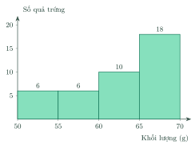
Enter a decimal number, e.g. 3.25.
Nhập số thập phân, ví dụ 3,25.
Midpoints \(52.5;\ 57.5;\ 62.5;\ 67.5\); \(\bar x=62.5\); \(s^2=\dfrac1n\sum n_ix_i^2-\bar x^2=3936.25-62.5^2=30\). \(s=\sqrt{30}\approx5.48\).
Giá trị đại diện \(52{,}5;\ 57{,}5;\ 62{,}5;\ 67{,}5\); \(\bar x=62{,}5\); \(s^2=\dfrac1n\sum n_ix_i^2-\bar x^2=3936{,}25-62{,}5^2=30\). \(s=\sqrt{30}\approx5{,}48\).
A test has scores with standard deviation \(s=6\). The teacher converts each score \(x\) to \(4x+5\). Find the new standard deviation.
Điểm một bài kiểm tra có độ lệch chuẩn \(s=6\). Giáo viên đổi mỗi điểm \(x\) thành \(4x+5\). Tính độ lệch chuẩn mới.
Enter a number.
Nhập một số.
\(s\) is multiplied by \(4\); adding \(5\) changes nothing: \(24\).
\(s\) nhân với \(4\); cộng \(5\) không làm đổi \(s\): \(24\).
A. Multiple ChoiceA. Trắc nghiệm nhiều lựa chọn
| Mass (g) | \([50;\,55)\) | \([55;\,60)\) | \([60;\,65)\) | \([65;\,70)\) | Total |
|---|---|---|---|---|---|
| Eggs | \(4\) | \(6\) | \(11\) | \(4\) | \(n=25\) |
| Khối lượng (g) | \([50;\,55)\) | \([55;\,60)\) | \([60;\,65)\) | \([65;\,70)\) | Cộng |
|---|---|---|---|---|---|
| Số quả trứng | \(4\) | \(6\) | \(11\) | \(4\) | \(n=25\) |
Answer: b. Midpoints \(52.5;\ 57.5;\ 62.5;\ 67.5\); \(\bar x=60.5\); \(s^2=\dfrac1n\sum n_ix_i^2-\bar x^2=3682.25-60.5^2=22\).
Đáp án b. Giá trị đại diện \(52{,}5;\ 57{,}5;\ 62{,}5;\ 67{,}5\); \(\bar x=60{,}5\); \(s^2=\dfrac1n\sum n_ix_i^2-\bar x^2=3682{,}25-60{,}5^2=22\).
For the speeds (km/h) of cars passing a speed camera, a grouped sample of size \(n=50\) gives \(\sum n_ix_i=1600\) and \(\sum n_ix_i^2=52450\). The standard deviation is…
Với tốc độ (km/h) của các ô tô đi qua trạm đo tốc độ, mẫu ghép nhóm cỡ \(n=50\) có \(\sum n_ix_i=1600\) và \(\sum n_ix_i^2=52450\). Độ lệch chuẩn của mẫu là…
Answer: a. \(\bar x=32\), \(s^2=\dfrac{52450}{50}-32^2=25\), \(s=5\).
Đáp án a. \(\bar x=32\), \(s^2=\dfrac{52450}{50}-32^2=25\), \(s=5\).
The variance of the daily rainfall is \(s^2=12.25\) mm². The standard deviation is…
Phương sai của lượng mưa mỗi ngày là \(s^2=12{,}25\) mm². Độ lệch chuẩn là…
Answer: d. \(s=\sqrt{12.25}=3.5\); \(s\) has the same unit as the data (mm).
Đáp án d. \(s=\sqrt{12{,}25}=3{,}5\); \(s\) có cùng đơn vị với số liệu (mm).
Two athletes ran the 100 m many times (seconds). A: mean \(13.2\), \(s=1.5\). B: mean \(12.7\), \(s=2.3\). Which conclusion is right?
Hai vận động viên chạy 100 m nhiều lần (giây). A: trung bình \(13{,}2\), \(s=1{,}5\). B: trung bình \(12{,}7\), \(s=2{,}3\). Kết luận nào đúng?
Answer: b. The smaller standard deviation means less spread: \(1.5\lt2.3\).
Đáp án b. Độ lệch chuẩn nhỏ hơn thì ít phân tán hơn: \(1{,}5\lt2{,}3\).
Which expression is equal to the variance \(s^2\) of grouped data?
Biểu thức nào bằng phương sai \(s^2\) của mẫu ghép nhóm?
Answer: b. Expanding \((x_i-\bar x)^2\) gives \(s^2=\dfrac1n\sum n_ix_i^2-\bar x^2\).
Đáp án b. Khai triển \((x_i-\bar x)^2\) được \(s^2=\dfrac1n\sum n_ix_i^2-\bar x^2\).
| Lifetime (h) | \([1000;\,1200)\) | \([1200;\,1400)\) | Total |
|---|---|---|---|
| Bulbs | \(5\) | \(5\) | \(n=10\) |
| Tuổi thọ (giờ) | \([1000;\,1200)\) | \([1200;\,1400)\) | Cộng |
|---|---|---|---|
| Số bóng đèn | \(5\) | \(5\) | \(n=10\) |
Answer: c. \(\bar x\) is halfway between the two midpoints, every value is \(100\) away from \(\bar x\), so \(s=100\).
Đáp án c. \(\bar x\) nằm chính giữa hai giá trị đại diện, mọi giá trị cách \(\bar x\) đúng \(100\) nên \(s=100\).
B. True or FalseB. Đúng hoặc sai
| Height (cm) | \([150;\,160)\) | \([160;\,170)\) | \([170;\,180)\) | \([180;\,190)\) | Total |
|---|---|---|---|---|---|
| Students | \(3\) | \(5\) | \(3\) | \(9\) | \(n=20\) |
| Chiều cao (cm) | \([150;\,160)\) | \([160;\,170)\) | \([170;\,180)\) | \([180;\,190)\) | Cộng |
|---|---|---|---|---|---|
| Số học sinh | \(3\) | \(5\) | \(3\) | \(9\) | \(n=20\) |
Midpoints \(155;\ 165;\ 175;\ 185\); \(\bar x=174\); \(s^2=\dfrac1n\sum n_ix_i^2-\bar x^2=30405-174^2=129\).
Giá trị đại diện \(155;\ 165;\ 175;\ 185\); \(\bar x=174\); \(s^2=\dfrac1n\sum n_ix_i^2-\bar x^2=30405-174^2=129\).
The standard deviation has the same unit as the data.
Độ lệch chuẩn có cùng đơn vị với số liệu.
Adding \(c\): \(s\) unchanged. Multiplying by \(k\gt0\): \(s\) times \(k\), \(s^2\) times \(k^2\). \(s\) has the data unit.
Cộng \(c\): \(s\) không đổi. Nhân \(k\gt0\): \(s\) nhân \(k\), \(s^2\) nhân \(k^2\). \(s\) có cùng đơn vị với số liệu.
All rents in a company are increased by 10%. Then the standard deviation of the rents increases by 21%.
Mọi tiền thuê nhà trong một công ty đều tăng 10%. Khi đó độ lệch chuẩn của tiền thuê nhà tăng 21%.
Multiplying by \(1.1\): \(s\) is multiplied by \(1.1\) (+10%), \(s^2\) by \(1.21\) (+21%).
Nhân với \(1{,}1\): \(s\) nhân \(1{,}1\) (tăng 10%), \(s^2\) nhân \(1{,}21\) (tăng 21%).
C. Short AnswerC. Trả lời ngắn
For a sample, \(\bar x=10\), \(s=3\). What is \(\dfrac1n\sum n_ix_i^2\)?
Một mẫu có \(\bar x=10\), \(s=3\). Tìm \(\dfrac1n\sum n_ix_i^2\).
Enter a number.
Nhập một số.
\(s^2=\dfrac1n\sum n_ix_i^2-\bar x^2\Rightarrow\dfrac1n\sum n_ix_i^2=9+100=109\).
\(s^2=\dfrac1n\sum n_ix_i^2-\bar x^2\Rightarrow\dfrac1n\sum n_ix_i^2=9+100=109\).
A survey asked teenagers how long they use a phone each day. Use the histogram to estimate the standard deviation of the daily phone time (round to the tenths).
Khảo sát thời gian dùng điện thoại mỗi ngày của học sinh. Dùng biểu đồ tần số, ước lượng độ lệch chuẩn của thời gian dùng điện thoại mỗi ngày (làm tròn đến hàng phần mười).
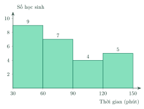
Enter a decimal number, e.g. 3.25.
Nhập số thập phân, ví dụ 3,25.
Midpoints \(45;\ 75;\ 105;\ 135\); \(\bar x=81\); \(s^2=\dfrac1n\sum n_ix_i^2-\bar x^2=7713-81^2=1152\). \(s=\sqrt{1152}\approx33.9\).
Giá trị đại diện \(45;\ 75;\ 105;\ 135\); \(\bar x=81\); \(s^2=\dfrac1n\sum n_ix_i^2-\bar x^2=7713-81^2=1152\). \(s=\sqrt{1152}\approx33{,}9\).
The masses of parcels have variance \(s^2=25\) kg². Each parcel is put into a box of mass 2 kg, and the total masses are multiplied by 3 to get the shipping cost units. Find the new variance.
Khối lượng các bưu kiện có phương sai \(s^2=25\) kg². Mỗi bưu kiện được cho vào hộp nặng 2 kg, rồi khối lượng tổng được nhân 3 để ra số đơn vị cước. Tính phương sai mới.
Enter a number.
Nhập một số.
Adding a constant keeps \(s^2\); multiplying by \(3\) multiplies \(s^2\) by \(9\): \(225\).
Cộng hằng số không đổi \(s^2\); nhân với \(3\) thì \(s^2\) nhân với \(9\): \(225\).
D. Self-practice: Multiple ChoiceD. Tự luyện: trắc nghiệm
| Age | \([25;\,35)\) | \([35;\,45)\) | \([45;\,55)\) | \([55;\,65)\) | \([65;\,75)\) | Total |
|---|---|---|---|---|---|---|
| Employees | \(9\) | \(5\) | \(12\) | \(10\) | \(14\) | \(n=50\) |
| Tuổi | \([25;\,35)\) | \([35;\,45)\) | \([45;\,55)\) | \([55;\,65)\) | \([65;\,75)\) | Cộng |
|---|---|---|---|---|---|---|
| Số nhân viên | \(9\) | \(5\) | \(12\) | \(10\) | \(14\) | \(n=50\) |
Answer: c. Midpoints \(30;\ 40;\ 50;\ 60;\ 70\); \(\bar x=53\); \(s^2=\dfrac1n\sum n_ix_i^2-\bar x^2=3014-53^2=205\).
Đáp án c. Giá trị đại diện \(30;\ 40;\ 50;\ 60;\ 70\); \(\bar x=53\); \(s^2=\dfrac1n\sum n_ix_i^2-\bar x^2=3014-53^2=205\).
A grouped sample of size \(n=50\) has \(\sum n_i(x_i-\bar x)^2=2450\). Its standard deviation is…
Mẫu ghép nhóm cỡ \(n=50\) có \(\sum n_i(x_i-\bar x)^2=2450\). Độ lệch chuẩn của mẫu là…
Answer: a. \(s^2=\dfrac{2450}{50}=49\), \(s=7\).
Đáp án a. \(s^2=\dfrac{2450}{50}=49\), \(s=7\).
An electricity company recorded the monthly electricity use of households in a street. Two samples have the same mean. Without computing, which statement is correct?
A
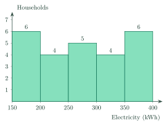
B
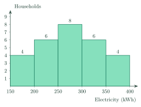
Công ty điện lực ghi lại lượng điện tiêu thụ hằng tháng của các hộ gia đình một con phố. Hai mẫu có cùng số trung bình. Không cần tính, khẳng định nào đúng?
A
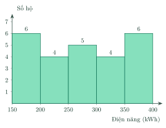
B
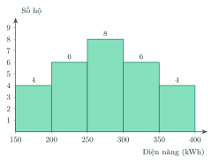
Answer: a. In A most values are in the outer groups, far from \(\bar x=275\) (\(s^2_A=5600\), \(s^2_B=\dfrac{27500}{7}\)).
Đáp án a. Ở mẫu A, phần lớn giá trị nằm ở các nhóm ngoài, xa \(\bar x=275\) (\(s^2_A=5600\), \(s^2_B=\dfrac{27500}{7}\)).
| Waiting (min) | \([5;\,10)\) | \([10;\,15)\) | \([15;\,20)\) | \([20;\,25)\) | Total |
|---|---|---|---|---|---|
| Customers | \(6\) | \(8\) | \(6\) | \(5\) | \(n=25\) |
| Thời gian chờ (phút) | \([5;\,10)\) | \([10;\,15)\) | \([15;\,20)\) | \([20;\,25)\) | Cộng |
|---|---|---|---|---|---|
| Số khách hàng | \(6\) | \(8\) | \(6\) | \(5\) | \(n=25\) |
Answer: c. \(s\ge0\) and \(s\) cannot exceed half the range \(\dfrac R2=10\); indeed \(s\approx5.3\).
Đáp án c. \(s\ge0\) và \(s\) không vượt quá nửa khoảng biến thiên \(\dfrac R2=10\); thật vậy \(s\approx5{,}3\).
| Time (min) | \([0;\,30)\) | \([30;\,60)\) | \([60;\,90)\) | \([90;\,120)\) | Total |
|---|---|---|---|---|---|
| Teenagers | \(7\) | \(5\) | \(9\) | \(x\) | \(n=21+x\) |
| Thời gian (phút) | \([0;\,30)\) | \([30;\,60)\) | \([60;\,90)\) | \([90;\,120)\) | Cộng |
|---|---|---|---|---|---|
| Số học sinh | \(7\) | \(5\) | \(9\) | \(x\) | \(n=21+x\) |
Answer: c. From \(\bar x=57\): \(x=4\), \(n=25\). Midpoints \(15;\ 45;\ 75;\ 105\); \(\bar x=57\); \(s^2=\dfrac1n\sum n_ix_i^2-\bar x^2=4257-57^2=1008\).
Đáp án c. Từ \(\bar x=57\) tìm được \(x=4\), \(n=25\). Giá trị đại diện \(15;\ 45;\ 75;\ 105\); \(\bar x=57\); \(s^2=\dfrac1n\sum n_ix_i^2-\bar x^2=4257-57^2=1008\).
Which statement about the variance and the standard deviation is correct?
Khẳng định nào về phương sai và độ lệch chuẩn là đúng?
Answer: b. A sample has \(s=0\) exactly when all its values are equal.
Đáp án b. Mẫu có \(s=0\) khi và chỉ khi mọi giá trị bằng nhau.
A sample of 39 teachers has mean \(\bar x\) and variance \(s^2=100\). One more value equal to \(\bar x\) is added. The new variance is…
Một mẫu gồm 39 giáo viên có số trung bình \(\bar x\) và phương sai \(s^2=100\). Thêm một giá trị đúng bằng \(\bar x\). Phương sai mới là…
Answer: b. The mean stays \(\bar x\); the sum of squared deviations stays \(39\cdot100\) but is divided by \(40\): \(97.5\).
Đáp án b. Số trung bình vẫn là \(\bar x\); tổng bình phương độ lệch vẫn là \(39\cdot100\) nhưng chia cho \(40\): \(97{,}5\).
| Score | \([10;\,15)\) | \([15;\,20)\) | \([20;\,25)\) | \([25;\,30)\) | \([30;\,35)\) | Total |
|---|---|---|---|---|---|---|
| Students | \(2\) | \(1\) | \(9\) | \(3\) | \(1\) | \(n=16\) |
| Điểm | \([10;\,15)\) | \([15;\,20)\) | \([20;\,25)\) | \([25;\,30)\) | \([30;\,35)\) | Cộng |
|---|---|---|---|---|---|---|
| Số học sinh | \(2\) | \(1\) | \(9\) | \(3\) | \(1\) | \(n=16\) |
Answer: d. \([\bar x-s;\,\bar x+s]=[17.5;\,27.5]\) contains the midpoints of the 2nd, 3rd and 4th groups: \(1+9+3=13\).
Đáp án d. \([\bar x-s;\,\bar x+s]=[17{,}5;\,27{,}5]\) chứa giá trị đại diện của nhóm 2, 3, 4: \(1+9+3=13\).
D. Self-practice: Multiple ChoiceD. Tự luyện: trắc nghiệm
| Income | \([10;\,12)\) | \([12;\,14)\) | \([14;\,16)\) | \([16;\,18)\) | Total |
|---|---|---|---|---|---|
| Workers | \(4\) | \(9\) | \(6\) | \(5\) | \(n=24\) |
| Thu nhập (triệu đồng) | \([10;\,12)\) | \([12;\,14)\) | \([14;\,16)\) | \([16;\,18)\) | Cộng |
|---|---|---|---|---|---|
| Số công nhân | \(4\) | \(9\) | \(6\) | \(5\) | \(n=24\) |
Answer: a. Midpoints \(11;\ 13;\ 15;\ 17\); \(\bar x=14\); \(s^2=\dfrac1n\sum n_ix_i^2-\bar x^2=200-14^2=4\).
Đáp án a. Giá trị đại diện \(11;\ 13;\ 15;\ 17\); \(\bar x=14\); \(s^2=\dfrac1n\sum n_ix_i^2-\bar x^2=200-14^2=4\).
For \(n=40\) values, the sum of squared deviations is \(\sum n_i(x_i-\bar x)^2=720\). Find \(s\).
Với \(n=40\) giá trị, tổng bình phương độ lệch là \(\sum n_i(x_i-\bar x)^2=720\). Tìm \(s\).
Answer: d. \(s^2=\dfrac{720}{40}=18\), \(s=\sqrt{18}\).
Đáp án d. \(s^2=\dfrac{720}{40}=18\), \(s=\sqrt{18}\).
The heights of the students in a class were measured and grouped as follows. Look at the two histograms (same groups, same mean). Which sample is more spread out?
A
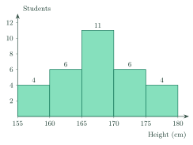
B
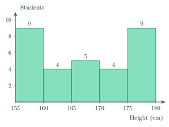
Đo chiều cao của các học sinh một lớp rồi ghép nhóm số liệu như sau. Quan sát hai biểu đồ (cùng các nhóm, cùng số trung bình). Mẫu nào phân tán hơn?
A
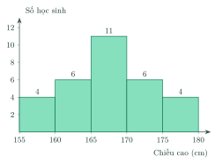
B
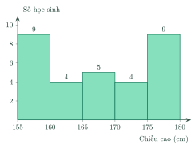
Answer: c. In B most values are in the outer groups, far from \(\bar x=167.5\) (\(s^2_A=\dfrac{1100}{31}\), \(s^2_B=\dfrac{2000}{31}\)).
Đáp án c. Ở mẫu B, phần lớn giá trị nằm ở các nhóm ngoài, xa \(\bar x=167{,}5\) (\(s^2_A=\dfrac{1100}{31}\), \(s^2_B=\dfrac{2000}{31}\)).
| Score | \([10;\,15)\) | \([15;\,20)\) | \([20;\,25)\) | \([25;\,30)\) | \([30;\,35)\) | Total |
|---|---|---|---|---|---|---|
| Students | \(3\) | \(6\) | \(4\) | \(2\) | \(5\) | \(n=20\) |
| Điểm | \([10;\,15)\) | \([15;\,20)\) | \([20;\,25)\) | \([25;\,30)\) | \([30;\,35)\) | Cộng |
|---|---|---|---|---|---|---|
| Số học sinh | \(3\) | \(6\) | \(4\) | \(2\) | \(5\) | \(n=20\) |
Answer: a. \(s\ge0\) and \(s\) cannot exceed half the range \(\dfrac R2=12.5\); indeed \(s\approx7.1\).
Đáp án a. \(s\ge0\) và \(s\) không vượt quá nửa khoảng biến thiên \(\dfrac R2=12{,}5\); thật vậy \(s\approx7{,}1\).
| Time (min) | \([60;\,90)\) | \([90;\,120)\) | \([120;\,150)\) | \([150;\,180)\) | Total |
|---|---|---|---|---|---|
| Teenagers | \(11\) | \(6\) | \(x\) | \(7\) | \(n=24+x\) |
| Thời gian (phút) | \([60;\,90)\) | \([90;\,120)\) | \([120;\,150)\) | \([150;\,180)\) | Cộng |
|---|---|---|---|---|---|
| Số học sinh | \(11\) | \(6\) | \(x\) | \(7\) | \(n=24+x\) |
Answer: d. From \(\bar x=114\): \(x=6\), \(n=30\). Midpoints \(75;\ 105;\ 135;\ 165\); \(\bar x=114\); \(s^2=\dfrac1n\sum n_ix_i^2-\bar x^2=14265-114^2=1269\).
Đáp án d. Từ \(\bar x=114\) tìm được \(x=6\), \(n=30\). Giá trị đại diện \(75;\ 105;\ 135;\ 165\); \(\bar x=114\); \(s^2=\dfrac1n\sum n_ix_i^2-\bar x^2=14265-114^2=1269\).
Choose the true statement about the standard deviation \(s\).
Chọn khẳng định đúng về độ lệch chuẩn \(s\).
Answer: a. The larger \(s\) is, the more the data are spread around the mean.
Đáp án a. \(s\) càng lớn thì số liệu càng phân tán quanh số trung bình.
A sample of 24 runners has mean \(\bar x\) and variance \(s^2=40\). One more value equal to \(\bar x\) is added. The new variance is…
Một mẫu gồm 24 vận động viên có số trung bình \(\bar x\) và phương sai \(s^2=40\). Thêm một giá trị đúng bằng \(\bar x\). Phương sai mới là…
Answer: d. The mean stays \(\bar x\); the sum of squared deviations stays \(24\cdot40\) but is divided by \(25\): \(38.4\).
Đáp án d. Số trung bình vẫn là \(\bar x\); tổng bình phương độ lệch vẫn là \(24\cdot40\) nhưng chia cho \(25\): \(38{,}4\).
| Electricity (kWh) | \([150;\,200)\) | \([200;\,250)\) | \([250;\,300)\) | \([300;\,350)\) | \([350;\,400)\) | Total |
|---|---|---|---|---|---|---|
| Households | \(1\) | \(9\) | \(9\) | \(7\) | \(2\) | \(n=28\) |
| Điện năng (kWh) | \([150;\,200)\) | \([200;\,250)\) | \([250;\,300)\) | \([300;\,350)\) | \([350;\,400)\) | Cộng |
|---|---|---|---|---|---|---|
| Số hộ | \(1\) | \(9\) | \(9\) | \(7\) | \(2\) | \(n=28\) |
Answer: a. \([\bar x-s;\,\bar x+s]=[225;\,325]\) contains the midpoints of the 2nd, 3rd and 4th groups: \(9+9+7=25\).
Đáp án a. \([\bar x-s;\,\bar x+s]=[225;\,325]\) chứa giá trị đại diện của nhóm 2, 3, 4: \(9+9+7=25\).
D. Self-practice: Multiple ChoiceD. Tự luyện: trắc nghiệm
| Income | \([10;\,12)\) | \([12;\,14)\) | \([14;\,16)\) | \([16;\,18)\) | Total |
|---|---|---|---|---|---|
| Workers | \(7\) | \(5\) | \(4\) | \(4\) | \(n=20\) |
| Thu nhập (triệu đồng) | \([10;\,12)\) | \([12;\,14)\) | \([14;\,16)\) | \([16;\,18)\) | Cộng |
|---|---|---|---|---|---|
| Số công nhân | \(7\) | \(5\) | \(4\) | \(4\) | \(n=20\) |
Answer: c. Midpoints \(11;\ 13;\ 15;\ 17\); \(\bar x=13.5\); \(s^2=\dfrac1n\sum n_ix_i^2-\bar x^2=187.4-13.5^2=5.15\).
Đáp án c. Giá trị đại diện \(11;\ 13;\ 15;\ 17\); \(\bar x=13{,}5\); \(s^2=\dfrac1n\sum n_ix_i^2-\bar x^2=187{,}4-13{,}5^2=5{,}15\).
The squared deviations from the mean add up to \(2560\) for \(n=40\) values. Then \(s=\)…
Tổng bình phương các độ lệch so với số trung bình bằng \(2560\) với \(n=40\) giá trị. Khi đó \(s=\)…
Answer: c. \(s^2=\dfrac{2560}{40}=64\), \(s=8\).
Đáp án c. \(s^2=\dfrac{2560}{40}=64\), \(s=8\).
The ages of the employees of a company are grouped as follows. Compare the spread of samples A and B shown in the histograms.
A
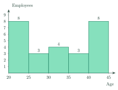
B
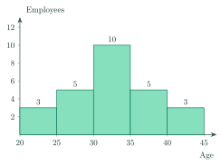
Tuổi của các nhân viên một công ty được ghép nhóm như sau. So sánh độ phân tán của hai mẫu A và B trong biểu đồ.
A
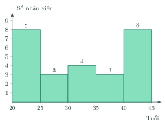
B
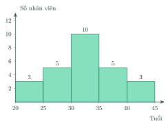
Answer: b. In A most values are in the outer groups, far from \(\bar x=32.5\) (\(s^2_A=\dfrac{875}{13}\), \(s^2_B=\dfrac{425}{13}\)).
Đáp án b. Ở mẫu A, phần lớn giá trị nằm ở các nhóm ngoài, xa \(\bar x=32{,}5\) (\(s^2_A=\dfrac{875}{13}\), \(s^2_B=\dfrac{425}{13}\)).
| Waiting (min) | \([10;\,15)\) | \([15;\,20)\) | \([20;\,25)\) | \([25;\,30)\) | Total |
|---|---|---|---|---|---|
| Customers | \(3\) | \(5\) | \(9\) | \(3\) | \(n=20\) |
| Thời gian chờ (phút) | \([10;\,15)\) | \([15;\,20)\) | \([20;\,25)\) | \([25;\,30)\) | Cộng |
|---|---|---|---|---|---|
| Số khách hàng | \(3\) | \(5\) | \(9\) | \(3\) | \(n=20\) |
Answer: b. \(s\ge0\) and \(s\) cannot exceed half the range \(\dfrac R2=10\); indeed \(s\approx4.6\).
Đáp án b. \(s\ge0\) và \(s\) không vượt quá nửa khoảng biến thiên \(\dfrac R2=10\); thật vậy \(s\approx4{,}6\).
| Time (min) | \([5;\,15)\) | \([15;\,25)\) | \([25;\,35)\) | \([35;\,45)\) | Total |
|---|---|---|---|---|---|
| Students | \(5\) | \(x\) | \(7\) | \(9\) | \(n=21+x\) |
| Thời gian (phút) | \([5;\,15)\) | \([15;\,25)\) | \([25;\,35)\) | \([35;\,45)\) | Cộng |
|---|---|---|---|---|---|
| Số học sinh | \(5\) | \(x\) | \(7\) | \(9\) | \(n=21+x\) |
Answer: a. From \(\bar x=28\): \(x=4\), \(n=25\). Midpoints \(10;\ 20;\ 30;\ 40\); \(\bar x=28\); \(s^2=\dfrac1n\sum n_ix_i^2-\bar x^2=912-28^2=128\).
Đáp án a. Từ \(\bar x=28\) tìm được \(x=4\), \(n=25\). Giá trị đại diện \(10;\ 20;\ 30;\ 40\); \(\bar x=28\); \(s^2=\dfrac1n\sum n_ix_i^2-\bar x^2=912-28^2=128\).
Which of the following is true?
Khẳng định nào sau đây đúng?
Answer: c. The standard deviation is the square root of the variance.
Đáp án c. Độ lệch chuẩn là căn bậc hai của phương sai.
A sample of 19 apples has mean \(\bar x\) and variance \(s^2=100\). One more value equal to \(\bar x\) is added. The new variance is…
Một mẫu gồm 19 quả táo có số trung bình \(\bar x\) và phương sai \(s^2=100\). Thêm một giá trị đúng bằng \(\bar x\). Phương sai mới là…
Answer: a. The mean stays \(\bar x\); the sum of squared deviations stays \(19\cdot100\) but is divided by \(20\): \(95\).
Đáp án a. Số trung bình vẫn là \(\bar x\); tổng bình phương độ lệch vẫn là \(19\cdot100\) nhưng chia cho \(20\): \(95\).
| Electricity (kWh) | \([100;\,150)\) | \([150;\,200)\) | \([200;\,250)\) | \([250;\,300)\) | \([300;\,350)\) | Total |
|---|---|---|---|---|---|---|
| Households | \(1\) | \(6\) | \(12\) | \(2\) | \(3\) | \(n=24\) |
| Điện năng (kWh) | \([100;\,150)\) | \([150;\,200)\) | \([200;\,250)\) | \([250;\,300)\) | \([300;\,350)\) | Cộng |
|---|---|---|---|---|---|---|
| Số hộ | \(1\) | \(6\) | \(12\) | \(2\) | \(3\) | \(n=24\) |
Answer: b. \([\bar x-s;\,\bar x+s]=[175;\,275]\) contains the midpoints of the 2nd, 3rd and 4th groups: \(6+12+2=20\).
Đáp án b. \([\bar x-s;\,\bar x+s]=[175;\,275]\) chứa giá trị đại diện của nhóm 2, 3, 4: \(6+12+2=20\).
8Common MistakesLỗi thường gặp
Using the group ends instead of the midpoints. \(x_i\) is the midpoint of the group.
Dùng đầu mút nhóm thay cho giá trị đại diện. \(x_i\) là giá trị chính giữa của nhóm.
Forgetting to subtract \(\bar x^2\). \(s^2=\dfrac1n\sum n_ix_i^2-\bar x^2\), not \(\dfrac1n\sum n_ix_i^2\).
Quên trừ \(\bar x^2\). \(s^2=\dfrac1n\sum n_ix_i^2-\bar x^2\), không phải \(\dfrac1n\sum n_ix_i^2\).
Mixing up \(s\) and \(s^2\). \(s\) is the square root; it has the unit of the data.
Nhầm \(s\) và \(s^2\). \(s\) là căn bậc hai của \(s^2\) và cùng đơn vị với số liệu.
"Larger mean = more stable". Stability depends on \(s\), not on the mean.
"Trung bình lớn hơn thì ổn định hơn". Độ ổn định phụ thuộc vào \(s\), không phụ thuộc số trung bình.
9Lesson SummaryTổng kết
\(s^2=\dfrac1n\sum n_i(x_i-\bar x)^2=\dfrac1n\sum n_ix_i^2-\bar x^2\); \(s=\sqrt{s^2}\).
\(s^2=\dfrac1n\sum n_i(x_i-\bar x)^2=\dfrac1n\sum n_ix_i^2-\bar x^2\); \(s=\sqrt{s^2}\).
\(x_i\) are the midpoints of the groups; the result is an estimate.
\(x_i\) là giá trị đại diện của các nhóm; kết quả là giá trị xấp xỉ.
Smaller \(s\): data more concentrated, more stable.
\(s\) nhỏ hơn: số liệu tập trung hơn, ổn định hơn.
Key words: variance, standard deviation, spread, stable.
Từ cần nhớ (chạm vào để xem tiếng Anh): phương sai; độ lệch chuẩn; độ phân tán; ổn định.